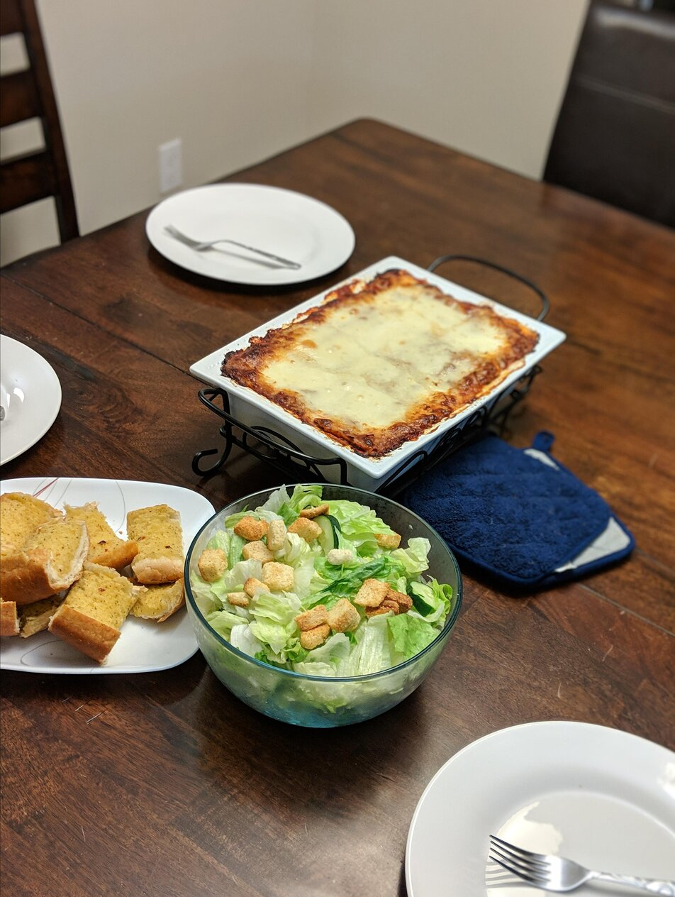

Lasagna

Perfectly Cooked Italian Delight
A well cooked blend of tamato sauces,
ricotta cheese, tender noodles
all baked to perfection
- cheese
- wide flat pasta
- Bell Peppers
- 1 1/2 cup minced Onion
- 2 cloves of Garlic
- 1 (28oz) can crushed Tomatos
- 2 (6oz) cans tamato paste
- 2 (6.5oz) cans tamato sauce
- 1 lb Sweet Italian Sausage
- 3/4 lb lean ground beef
- 1/2 cup water
- 2 tsb white sugar
- 1 1/2 tsp dried basil
- 1/2 teaspoon fennel seads
- 1 1/2 teaspoons salt
- 1/4 tsb black pepper
- 4 tsb chopped parsley
- 16oz ricota cheese
- 1 egg
- 3/4 lb of mozzarella cheese
- 3/4 cup grated parmesan
Cooking Steps
- Cook sausage, ground beef, Onion
and garlic on medium heat. Stir
in crushed tomatos, tamto paste
tomato sauce, and water.
season with sugar, basil, fennel seeds,
italian seasoning, salt, pepper, and
parsley. Let simmer covered for
1 1/2 hours, stirring occasionally
- Bring large pot of lightly salted
water to a boil. Cook Lasagna noodles
in boiling water for 8 to 10 minutes.
Drain noodles and rinse with cold
water. In a mixing bowl combine ricotta
cheese with egg, parsley and salt.
- Preheat ovan to 375 degrees F
- To assemble, spread 1 1/2 cups of meat
sauce int he bottom of a 9x13 inch
baking dish. Arrange 6 noodles
lengthwise over meat sauce. Spread
with one half of the ricotta cheese
mixture. top with thrd of the motzzarella
cheese slices. Spoon 1 1/2 cups
meat sauce over mozzarella and sprinkle
with 1/4 cup parmasan cheese. Repeat
layers, and top with remainign mozzarella
and parmesan cheese. Cover with foil:
to prevent sticking, spray foil with
cooking spray, or make sure foil
does not touch cheese.
- bake in preheated oven for 25 minutes.
Remove foil, bake and additional
25 minutes. Cool for 15 minutes before
serving.